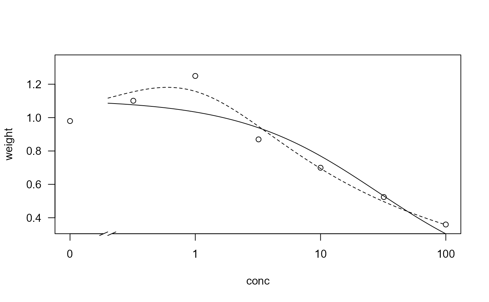

Hormesis in lettuce plants
lettuce.RdData are from an experiment where isobutylalcohol was dissolved in a nutrient solution in which lettuce (Lactuca sativa) plants were grown. The plant biomass of the shoot was determined af 21 days.
Usage
data(lettuce)Format
A data frame with 14 observations on the following 2 variables.
- conc
a numeric vector of concentrations of isobutylalcohol (mg/l)
- weight
a numeric vector of biomass of shoot (g)
Source
van Ewijk, P. H. and Hoekstra, J. A. (1993) Calculation of the EC50 and its Confidence Interval When Subtoxic Stimulus Is Present, ECOTOXICOLOGY AND ENVIRONMENTAL SAFETY, 25, 25–32.
References
van Ewijk, P. H. and Hoekstra, J. A. (1994) Curvature Measures and Confidence Intervals for the Linear Logistic Model, Appl. Statist., 43, 477–487.
Examples
library(drc)
## Look at data
lettuce
#> conc weight
#> 1 0.00 1.126
#> 2 0.00 0.833
#> 3 0.32 1.096
#> 4 0.32 1.106
#> 5 1.00 1.163
#> 6 1.00 1.336
#> 7 3.20 0.985
#> 8 3.20 0.754
#> 9 10.00 0.716
#> 10 10.00 0.683
#> 11 32.00 0.560
#> 12 32.00 0.488
#> 13 100.00 0.375
#> 14 100.00 0.344
## Monotonous dose-response model
lettuce.m1 <- drm(weight~conc, data=lettuce, fct=LL.3())
plot(lettuce.m1, broken = TRUE)
## Model fit in van Ewijk and Hoekstra (1994)
lettuce.m2 <- drm(weight~conc, data=lettuce, fct=BC.4())
modelFit(lettuce.m2)
#> Lack-of-fit test
#>
#> ModelDf RSS Df F value p value
#> ANOVA 7 0.088237
#> DRC model 10 0.124975 3 0.9715 0.4582
plot(lettuce.m2, add = TRUE, broken = TRUE, type = "none", lty = 2)

## Hormesis effect only slightly significant
summary(lettuce.m2)
#>
#> Model fitted: Brain-Cousens (hormesis) with lower limit fixed at 0 (4 parms)
#>
#> Parameter estimates:
#>
#> Estimate Std. Error t-value p-value
#> b:(Intercept) 1.282812 0.049346 25.9964 1.632e-10 ***
#> d:(Intercept) 0.967302 0.077123 12.5423 1.926e-07 ***
#> e:(Intercept) 0.847633 0.436093 1.9437 0.08059 .
#> f:(Intercept) 1.620703 0.979711 1.6543 0.12908
#> ---
#> Signif. codes: 0 '***' 0.001 '**' 0.01 '*' 0.05 '.' 0.1 ' ' 1
#>
#> Residual standard error:
#>
#> 0.1117922 (10 degrees of freedom)
## Hormesis effect highly significant
## compare with t-test for the "f" parameter in the summary output)
anova(lettuce.m1, lettuce.m2)
#>
#> 1st model
#> fct: LL.3()
#> 2nd model
#> fct: BC.4()
#>
#> ANOVA table
#>
#> ModelDf RSS Df F value p value
#> 1st model 11 0.24222
#> 2nd model 10 0.12498 1 9.3817 0.0120